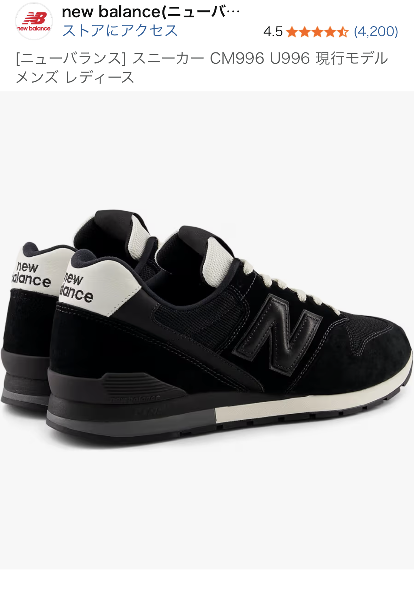

ニューバランス996は「大人の正解スニーカー」か？デザイン・履き心地・リセールまで徹底レビュー
ニューバランスの中でも「とりあえずこれを選んでおけば間違いない」とよく名前が挙がるのが 996 シリーズです。雑誌やファッション系YouTuberでも頻繁に取り上げられ、街中でも着用者をよく見かける“定番中の定番”。この記事では、口コミや実際の使用感をもとに、996の魅力と注意点をファッション目線で詳しくレビューします。

ニューバランス996がオススメされる理由
まず結論から言うと、ニューバランスの中で「最初の一足」を選ぶなら、996は非常にバランスの良いモデルです。細身でスッキリしたシルエットなので、スラックスにもデニムにも合わせやすく、カジュアルになりすぎないのがポイント。いわゆる“ゴツいスニーカー”が苦手な人でも取り入れやすいデザインです。
口コミでも「とにかく合わせやすい」「休日の服装がこれ一足でまとまる」といった声が多く、ファッション初心者から服好きまで幅広く支持されています。靴はコーディネート全体の印象を決める重要なパーツなので、ここに投資しておくと“なんとなくオシャレに見える”状態を作りやすくなります。
細部に宿る高級感あるデザイン
996の魅力としてよく挙げられるのが、ディテールの高級感です。サイドの「N」ロゴの大きさや縁取り、スエードとメッシュの切り替え、ステッチの入り方など、近くで見ても安っぽさを感じにくい作りになっています。
特に、グレー系やネイビー系のカラーは、落ち着いたトーンの中にほんの少しだけ明るい差し色が入っており、光の当たり方で表情が変わるのがポイント。雑誌やファッション系YouTuberが「大人でも履けるスニーカー」として996を推すのは、この“さりげない高級感”が理由のひとつです。
スニーカーはどうしても子どもっぽく見えがちですが、996はジャケットスタイルやキレイめコーデにも合わせやすく、オンオフ兼用で使いたい人にも向いています。
配色が豊富だからこそ「色選び」に注意
996を選ぶうえで一番悩むのがカラー選びです。定番のグレー、ネイビー、ブラックに加え、限定色やショップ別注カラーなど、バリエーションが非常に豊富です。選択肢が多いのはメリットですが、「なんとなく好きな色」で選ぶと、手持ちの服と合わずに出番が減ることもあります。
失敗しにくいのは、やはりグレー系。デニム、チノパン、黒スラックス、カーゴパンツなど、ほとんどのボトムスと相性が良く、季節も選びません。次点でネイビーやブラックも使いやすいですが、ソールやロゴの配色によってはスポーティに寄りすぎることがあるため、普段の服装とのバランスを意識したいところです。
「服はシンプルで、足元で少し遊びたい」という人は、差し色が入ったモデルを選ぶのもアリですが、その場合は一足目ではなく二足目以降にするのが無難です。
履き心地とサイズ感：毎日履ける“ちょうどいい”クッション
履き心地については、「ふかふかで雲の上を歩いているような感覚」というよりは、適度なクッションと安定感があるタイプです。長時間歩いても疲れにくく、通勤・通学から休日の街歩きまで幅広く使えます。
サイズ感はやや細身なので、足幅が広い人はハーフサイズアップを検討しても良いかもしれません。とはいえ、極端にタイトというわけではなく、紐の締め具合である程度調整が可能です。靴は身体の先端にあるため、見た目だけでなく、歩きやすさや疲れにくさも含めて「自分の価値観の範囲でお金をかける価値がある」と感じる人は多いはずです。
雑誌・YouTuberが推す理由と中古市場での強さ
996は、ファッション雑誌やファッション系YouTuberが頻繁に取り上げるモデルでもあります。理由はシンプルで、トレンドに左右されにくい定番デザインでありながら、今っぽさもきちんとあるからです。コーディネート例も豊富に紹介されているため、「どう合わせればいいか分からない」という人でも真似しやすいのが大きなメリットです。
さらに、現在はニューバランス自体の人気が高く、996も例外ではありません。そのため、中古品の需要も高い状態が続いています。丁寧に履いておけば、サイズや状態によってはフリマアプリなどである程度の価格で手放せる可能性もあり、「買って終わり」ではなく「履いて楽しんで、最終的に手放す」という選択肢も取りやすいモデルです。
ニューバランス996は「最初の一足」にちょうどいい
まとめると、ニューバランス996は以下のような人に特におすすめできます。
- **定番で失敗しにくいスニーカー**を一足持っておきたい人
- カジュアルすぎない、大人っぽいスニーカーを探している人
- 雑誌やYouTuberが紹介している“鉄板モデル”を試してみたい人
- 将来的に中古で手放す選択肢も残しておきたい人
靴はコーディネートの中でも特に目につきやすいアイテムです。だからこそ、自分の価値観の範囲で少し良いものを選ぶと、日々の満足度が大きく変わります。ニューバランス996は、その「ちょっと良いもの」として非常にバランスの取れた一足だと感じます。
気になった方は、まずは定番カラーからチェックしてみてください。実際に手に取ってみると、写真では伝わりにくいディテールの高級感や、履いたときのシルエットの良さを実感できるはずです。